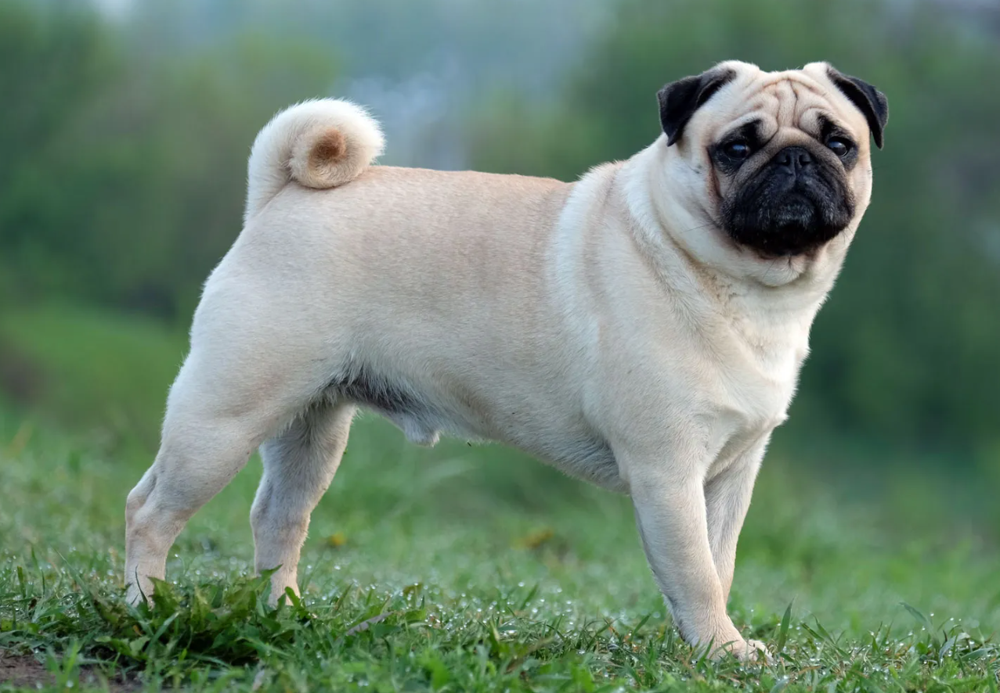

PUG
Weight:
14-18 lbs.
Height :
12 in.
11 in.
Length:
Short .
Color:
Apricot - fawn, black, all with black muzzle or mask, black ears
Longevity:
12 – 15 yrs.
Pug personality
Pugs are not the lively socialites that some of the toy breeds are. They are a bit more serious, with a dry sense of humor. The breed motto is multum in parvo, meaning a lot in a little, with plenty of dog in a small package. Pugs can be stubborn but normally want to please.These are fairly laid-back dogs, not usually given to extensive barking, digging or chewing. Pugs tend to get along well with other dogs and are sturdy enough to get along with children. They enjoy company and can be quite affectionate. True to their grouping, they are good companion dogs.
What to expect
Pugs are extremely easy to keep and have a serious tendency to become obese unless their diet and exercise are watched carefully. With the short muzzle, they do not do well in hot, humid weather and must be observed carefully for heatstroke. Pugs do tend to snore, again a result of the short muzzle. The prominent eyes are easily injured and care must be taken to keep them moist. Pugs are fairly robust and often live to 14 or 15 years of age. Pugs do best with some daily exercise to help with their weight problems. Despite their heroic alarm years ago, they are not usually great watchdogs, preferring instead to greet newcomers with a wagging tail. Pugs should be socialized to keep that outgoing temperament, and they do well with other pets.Grooming is important, both for the shedding from the dense coat and to keep facial wrinkles clean. A quick daily grooming, even a swipe with a hound mitt, usually suffices for the coat and a gentle wiping with a wet cloth for the face.
History of the Pug
While the pug is often associated with Holland, the breed originated in China, probably bred down from one of the local mastiff-type dogs. The little dogs with the round heads and expressive facial wrinkles were then transported to Holland via trading ships of the Dutch East India Company. In 1572, a pug sounded the alarm that saved Prince William from the approaching Spanish soldiers, and the breed forever after was tied to the royal House of Orange.Napoleon's wife had a pet pug, and the duke and duchess of Windsor had a pug as a royal companion. Victorian England took on pugs as the latest rage in canine fashion and many pugs can be spotted in paintings of that era.The word pug may come from the Latin pugnus for fist, possibly describing the round face and head. The name does not fit the breed's temperament, because these are not really guard dogs, but designed first and foremost as companion dogs.